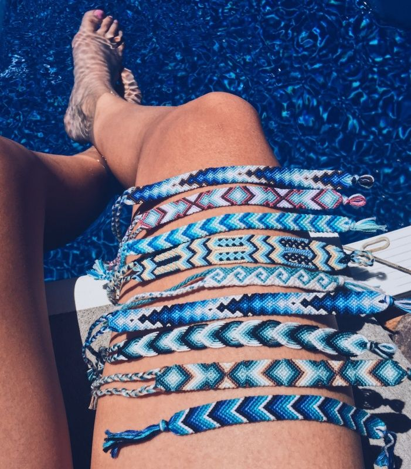
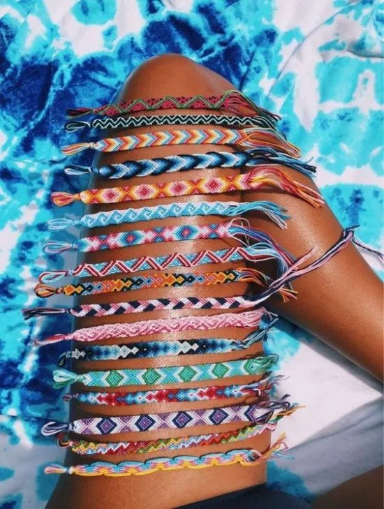
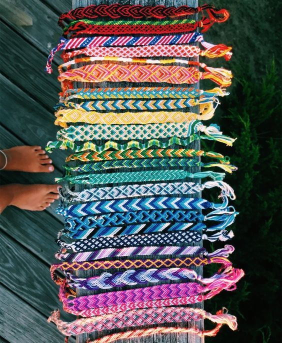
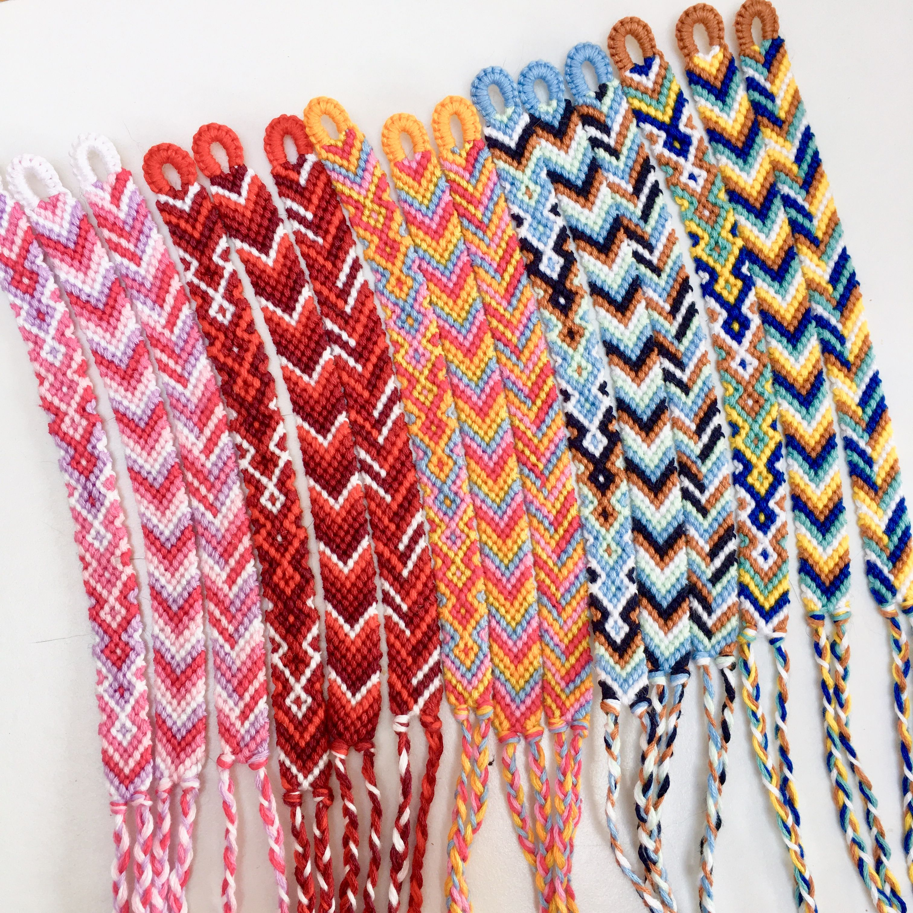
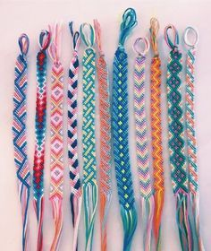

Hoi!
Vind je creatief bezig zijn leuk? En lijkt het je leuk om zelf armbandjes te maken? Of ben je je gewoon aan het vervelen?
Dan heb ik wel een leuk idee voor je: armbandjes maken!
Op deze website laat ik zien hoe je gemakkelijk armbandjes kunt maken. Ik maak deze armbandjes door katoen op een speciale manier te knopen.
Dit klinkt heel erg ingewikkeld, maar dat is het niet. Ik laat in instructie filmpjes gemakkelijk zien hoe je de knopen moet maken.
Als je de instructies gewoon volgt en onthoudt hoe je de knopen moet maken, moet je het knopen alleen nog maar herhalen.
Dan heb je na een tijdje al je eerste armbandje gemaakt.
Het is dus eigenlijk super makkelijk om zo'n armbandje te maken. Het is ook nog eens heel erg ontspannend en leuk om te doen.
Lijkt het je nou leuk om deze armbandjes te maken? Bekijk dan zeker mijn website en ga lekker aan de slag.
Tip!: Kijk lekker een film als je de armbandjes aan het maken bent. En pak er wat lekkers bij.
Dit zijn een paar voorbeelden van armbandjes die je kunt maken als je de knoop begrijpt:
    Social-media:
Dit zijn mijn social-media accounts. Hierop post ik dagelijks foto's en stories. Ik laat er leuke nieuwe armbandjes op zien en ik laat zien wat de nieuwste trends zijn. Ik laat ook zien hoe je de armbandjes leuk kunt combineren.
Ik heb ook heel erg veel de voorbeelden van VNR gebruikt.